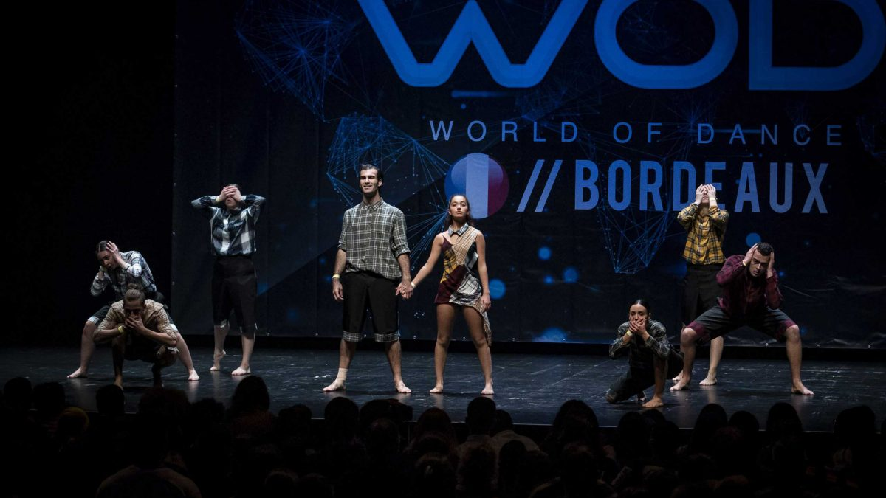
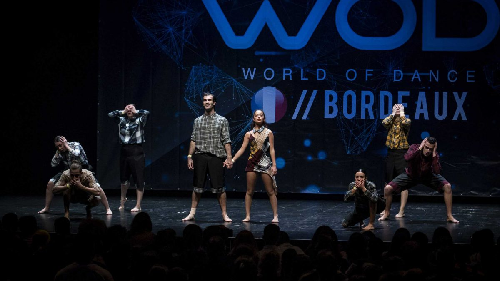

JB
Jean-Baptiste Buono découvre la danse dès l’âge de 11 ans, inspiré par son père. Passionné par le Hip-Hop et formé à l’école « Art Com Groove », il développe un style riche, influencé par Michael Jackson, Wade Robson, et de nombreuses danses : Street Dance, House, Locking, Popping, Salsa ou Krump.
Danseur, chorégraphe et interprète, il participe à des concerts et clips d’artistes comme Shy’m, IAM, Léa Castel ou Aya Nakamura. En 2011, il devient professeur de Hip-Hop et transmet sa passion avec énergie et humour, tout en gardant rigueur et exigence.
En 2015, avec son épouse Manon, il crée le Studio de danse JBM. Depuis, il continue de se former (notamment en Croatie au Beat Camp), enseigne à Martigues, et danse dans la troupe du cabaret « L’Évidence ».
Co-fondateur du groupe B.A.C Crew, il remporte plusieurs compétitions prestigieuses et atteint la finale mondiale du WOD à Los Angeles. Depuis 2020, il développe aussi sa deuxième passion : la musique, en tant que DJ professionnel.
Fondateur du groupe no identity en 2017, ils ont remporté des médailles d'or et des bons classements aux World of Dance : 16ème en 2022 et 7ème en 2023


 
